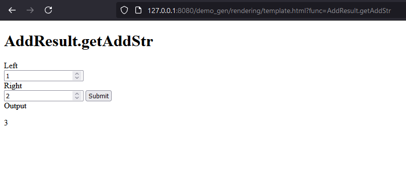
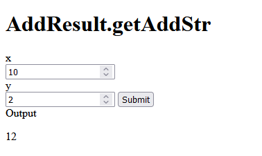

Introduction
Diplomat is a framework and tool for generating bindings to Rust libraries from an extensible set of languages.
Diplomat is for unidirectional bindings: it's for when foreign code wishes to call into a Rust library, but not vice versa. If you're looking for bidirectional bindings, tools like cxx are a good bet.
Diplomat is a proc macro paired with a tool. The proc macro is capable of generating an extern "C" binding layer around tagged Rust code, while the tool is able to generate corresponding C, C++, JS, or <insert language here> that philosophically matches the API on the Rust side. This means that methods in Rust map to "methods" in the target language, Result in Rust map to tagged unions in C++ and exceptions in Javascript, etc. These all work through the generated C API, however they preserve higher level API features which C cannot express.
A note on the design
You can read the full design doc here.
Diplomat does not do cross-crate global analysis, it restricts its view to specially tagged modules, and only generates bindings based on information found in those modules. This means that changing some struct in some dependency will not magically affect your generated C++/JS/etc APIs; all such change can only come from deliberate change to these tagged modules. This also means that Diplomat can cleanly define a subset of Rust used for declaring the exported API without impacting the flavor of Rust used in dependencies. One can imagine #[diplomat::bridge] blocks to almost be a DSL for bridging between your Rust APIs and a more general API shape that can be translated cleanly across languages.
Diplomat is designed such that it should not be a large amount of effort to write new language targets for Diplomat.
Backends supported
Diplomat currently supports the following backends:
- C
- C++
- JavaScript/TypeScript (using WASM)
- Dart
- Kotlin (using JNA)
- Python via Nanobind (maintained by Zeromatter)
There is work in progress for a Java backend (using Panama). We used to have a .NET backend but it was removed in a refactor, it may get added again.
We're happy to fix bugs or add configurability in the current backends if their produced output does not match what you need in your language. Details on how to write new backends is documented later in this book: you can do so as a third party library depending on diplomat_core, but we are also happy to accept these into Diplomat with the understanding that we'll only do minimal work to keep them working over time.
Setup
To install the diplomat CLI tool, run
$ cargo install diplomat-tool
Let's say this installs diplomat-tool 0.10.0
You can then add diplomat as a dependency to your project like so:
diplomat = "0.10.0"
diplomat-runtime = "0.10.0"
It is recommended to create a separate crate for the FFI interface. Diplomat will only read the contents of specially tagged modules so it is possible to mix Diplomat code with normal Rust code, but it is prefereable to minimize this since proc macros can make debugging hard.
User Guide
Setup
To install the diplomat CLI tool, run
$ cargo install diplomat-tool
Let's say this installs diplomat-tool 0.10.0
You can then add diplomat as a dependency to your project like so:
diplomat = "0.10.0"
diplomat-runtime = "0.10.0"
It is recommended to create a separate crate for the FFI interface. Diplomat will only read the contents of specially tagged modules so it is possible to mix Diplomat code with normal Rust code, but it is prefereable to minimize this since proc macros can make debugging hard.
Basics
When using Diplomat, you'll need to define Rust modules that contain the Rust APIs you want to expose. You can do this by using the diplomat::bridge macro:
#![allow(unused)] fn main() { #[diplomat::bridge] mod ffi { pub struct MyFFIStruct { pub a: i32, pub b: bool, } impl MyFFIStruct { pub fn create() -> MyFFIStruct { MyFFIStruct { a: 42, b: true } } pub fn do_a_thing(self) { println!("doing thing {:?}", self.b); } } } }
This is a simple struct with public fields; which is easier to reason about in an introductory example. Most APIs exposed via Diplomat will be via "opaque types", to be covered in the chapter on opaque types.
Every type declared within a diplomat::bridge module along with all methods in its associated impl will be exposed over FFI. For example, the above code will generate the following extern API:
#![allow(unused)] fn main() { #[no_mangle] extern "C" fn MyFFIStruct_create() -> MyFFIStruct { MyFFIStruct::create() } #[no_mangle] extern "C" fn MyFFIStruct_do_a_thing(this: &MyFFIStruct) { this.do_a_thing() } }
We can then generate the bindings for this API using the diplomat-tool CLI.
C++
For example, if we want to generate C++ bindings, we can create a folder `cpp/`` and generate bindings in it by running:
$ diplomat-tool cpp cpp/
This will generate the following struct in MyFFIStruct.hpp, along with some boilerplate:
struct MyFFIStruct {
public:
int32_t a;
bool b;
static MyFFIStruct create();
void do_a_thing();
};
If we want to generate Sphinx documentation to cpp-docs, we can run with that as an additional parameter:
$ diplomat-tool cpp cpp/ --docs cpp-docs/
WASM
For WASM JS/TypeScript bindings, you can use the following options, with similarly named directories:
$ diplomat-tool js js/ --docs js/docs/
This will generate JS that has a MyFFIStruct class, with a static create() method, a do_a_thing() method, and getters for the fields. This JS will require there to be a wasm.mjs file that loads in the built wasm file (See issue #80 for improving this), which you can base off of this file.
C
While low-level C headers are generated in the process of running diplomat-tool cpp, you can also generate just the C headers with
$ diplomat-tool c c/
Note that Diplomat's C mode generates direct bindings to the lower level extern "C" API, and is not idiomatic C code. It is recommended that one build a higher level API around the C API (perhaps by writing a plugin) if C bindings are desired.
Configuring Diplomat
Some Diplomat backends have configurable parameters to change the behavior of their output.
For instance, Kotlin requires a domain parameter and lib_name parameter. These two parameters are used to generate a package name and folder structure on generation.
Configuration Structures
Documentation on what configuration options are available in config.rs on GitHub.
Note that every configuration option uses snake_case for consistency, and that the SharedConfig struct is flattened. So for setting --config shared_config.lib_name="some_value", this would instead be --config lib_name="some_value".
Configuration Interfaces
Configuration information can be set in four ways:
config.toml
By default, Diplomat scans for a config.toml in the folder where diplomat_tool is being run. You can change the location of this folder with the --config_file parameter.
The structure of config.toml is as follows:
# Top level table specifies Shared Config settings that apply to all backends:
lib-name = "MyLibrary"
[kotlin]
# Individual tables can override Shared Config settings:
lib-name = "LibraryNameOverride"
# Along with backend specific settings:
domain = "org.myOrganization"
[demo_gen]
explicit-generation = true
[other-library-name]
some-value = 100
diplomat-tool CLI
When running diplomat-tool, you may pass in the --config flag for each option you wish to set:
./diplomat-tool kotlin ./kotlin-folder --config lib_name="MyLibrary" --config kotlin.domain = "org.myOrganization"
diplomat-tool flags take priority over config.toml.
diplomat_tool::gen
If you call diplomat_tool::gen manually, then you have the option of setting configuration yourself, with the diplomat_tool::config::Config struct.
See Backend Structures for more on these structures.
#[diplomat::config(...)]
In lib.rs, any top-level module, struct, or impl block can use the #[diplomat::config] attribute:
#![allow(unused)] fn main() { #[diplomat::config(lib_name="MyLibrary")] struct SomeConfig; #[diplomat::config(kotlin.domain="org.myOrganization")] mod kotlin_specific_mod; #[diplomat::config(...)] impl SomeConfig { } }
Due to a quirk of how Diplomat reads these attributes, #[diplomat::config] has priority over all other methods of setting configuration.
Types
Diplomat only supports a small set of types that can be passed over FFI.
- Builtins:
- All integers
boolcharDiplomatChar(u32), which is treated aschar-equivalent on the backend language, but need not be a valid Unicode code point for the Rust code to be sound.- Slices,
&[T]whereTis one of:- An integer type
boolcharDiplomatByte(u8): The same asu8except in languages where "byte buffer" and "list of integers" are different typesBox<OpaqueType>DiplomatStrSlice: An array of unvalidated strings, expected to be UTF-8. Currently only supported in C/C++ backends
- String slices:
&str: A validated, UTF-8 string. Will be converted/validated by the target language bindings if necessary.&DiplomatStr: An unvalidated string expected to be UTF-8.&DiplomatStr16: An unvalidated string expected to be UTF-16.
DiplomatWriteablefor returning strings. This needs to be the last parameter of the method.Option<&T>,Option<Box<T>>of opaque types,Option<T>of structs, enums, primitives, or the above slice types- Callbacks in parameters. Support is limited.
Result<T, E>in return values()as aResultOk/Errortype, or as a return value
- Custom types
- Custom opaque types (passed as references or via
Box<T>) - Custom structs and C-like enums
- Custom opaque types (passed as references or via
More types can be supported in the future (We have an issue open for traits)
The main distinction to keep track of is between "opaque types" and "structs": opaque types are for when you want to wrap a Rust object that has its own semantics, whereas "structs" are for when you want to transparently pass around multiple values at once (usually when you want to make an options struct as an argument, or return multiple values at once).
Opaque Types
In the vast majority of cases, we'd like to expose Rust types over FFI "opaquely", that is, the FFI code does not know anything about the contents of these types, rather it wants to do things with the type.
By default, Diplomat will not let you expose fields of types other than the allowed types over FFI. The following code will trigger a resolution error when running diplomat-tool:
#![allow(unused)] fn main() { #[diplomat::bridge] mod ffi { pub struct MyFFIType { pub a: i32, pub b: Vec<String>, // or "SomeTypeDefinedElsewhere" } impl MyFFIType { pub fn create() -> MyFFIType { todo!() } } } }
Of course, if Diplomat is to be able to usefully expose Rust APIs without requiring everything be defined within Diplomat's bridge blocks, there has to be some way to include them in this the API.
For this in Diplomat we declare opaque types, which can only exist behind pointers. Such types can contain whatever they want, but they can never be passed over the stack through FFI, and the other side cannot peek into them in ways other than calling explicitly defined methods.
For example, say we have the following type:
#![allow(unused)] fn main() { struct MyCollection { name: String, items: Vec<String>, } impl MyCollection { pub fn new(name: String) -> Self { Self { name, items: vec![] } } pub fn push(&mut self, s: String) { self.items.push(s) } pub fn dump(&self) { println!("Collection {} with items {:?}", self.name, self.items); } } }
To expose it over FFI, we'd do something like:
#![allow(unused)] fn main() { #[diplomat::bridge] mod ffi { // import this from wherever, does not need // to be the same crate use super::MyCollection as RustCollection; #[diplomat::opaque] pub struct MyCollection(RustCollection); impl MyCollection { pub fn create(s: &str) -> Box<MyCollection> { Box::new(MyCollection(RustCollection::new(s.into()))) } pub fn push(&mut self, s: &str) { self.0.push(s.into()) } pub fn dump(&self) { self.0.dump() } } } }
This will generate code exposing create(), push(), and dump() over FFI, as well as glue to ensure the destructor is called. However this will not expose any way to get at the RustCollection.
For example, the generated C++ looks something like
class MyCollection {
public:
static std::unique_ptr<MyCollection> create(const std::string_view s);
void push(const std::string_view s);
void dump();
// snip
private:
};
When exposing your library over FFI, most of the main types will probably end up being "opaque".
Boxes are return-only
Box<T> can only be returned, not accepted as a parameter. This is because in garbage collected languages it is not possible to know if we are the unique owner when converting back to Rust. There are some techniques we could use to add such functionality, see #317
Structs and enums
Diplomat allows for exposing basic structs and enums over FFI. Typically these should be used as inputs and outputs to other methods, rather than having methods of their own, however it is possible to give them methods which capture self by-value.
Structs are most commonly found when making an options type for a method, or when doing multiple return values.
#![allow(unused)] fn main() { #[diplomat::bridge] mod ffi { use my_thingy::MyThingy; // just exists so we can get methods #[diplomat::opaque] pub struct Thingy(MyThingy); pub struct ThingySettings { pub a: bool, pub b: u8, pub speed: SpeedSetting, } #[diplomat::enum_convert(my_thingy::SpeedSetting)] pub enum SpeedSetting { Fast, Medium, Slow } #[diplomat::enum_convert(my_thingy::ThingyStatus)] pub enum ThingyStatus { Good, Bad } impl Thingy { pub fn create(settings: ThingySettings) -> Box<Thingy> { // Convert our FFI type to whatever internal settings type was needed let settings = my_thingy::ThingySettings { a: settings.a, b: settings.b, speed: settings.speed.into() }; Box::new(Thingy::new(settings)) } pub fn get_status(&self) -> ThingyStatus { self.0.get_status().into() } } } }
Enums exposed via Diplomat must be simple C-like enums. They can have explicit discriminants. Structs may only contain fields which are themselves allowed types.
In C++ the structs are translated to simple structs and the enums become simple enum classes. In JS the structs become objects with fields, and the enums are exposed as strings that get converted at the boundary.
diplomat::enum_convert
Diplomat can autogenerate Into impls to an enum from your library using #[diplomat::enum_convert]:
#![allow(unused)] fn main() { #[diplomat::bridge] mod ffi { // ... #[diplomat::enum_convert(my_thingy::SpeedSetting)] enum SpeedSetting { Fast, Medium, Slow } // ... } }
In case the enum is #[non_exhaustive], you may need to supply a needs_wildcard argument, like so: #[diplomat::enum_convert(my_library::SpeedSetting, needs_wildcard)].
Structs containing boxes
By default, structs cannot contain output-only types like Box<T>. This can be opted in to by using #[diplomat::out], which will have the additional effect of making the struct an output-only type.
#![allow(unused)] fn main() { mod ffi { use my_thingy::MyThingy; #[diplomat::opaque] pub struct Thingy(=MyThingy); #[diplomat::out] pub struct ThingyAndExtraStuff { pub thingy: Box<Thingy>, pub stuff: u32 } impl Thingy { pub fn create() -> ThingyAndExtraStuff { let thingy = Box::new(Thingy(MyThingy::new())); let stuff = 42; ThingyAndExtraStuff { thingy, stuff } } } } }
Option types
Option types in Diplomat are relatively straightforward, you simply use Option<T> and it turns into the idiomatic equivalent over FFI.
Option<T> currently only works when wrapping reference types (Box<OpaqueType> and &OpaqueType), structs/enums/primitives, or slices of the above. It may be used as an input argument, or in return type position:
#![allow(unused)] fn main() { #[diplomat::bridge] mod ffi { // just exists so we can get methods #[diplomat::opaque] pub struct Thingy; impl Thingy { pub fn maybe_create() -> Option<Box<Thingy>> { Some(Box::new(Thingy)) } pub fn increment_option(x: Option<u8>) -> Option<u8> { x.map(|inner| inner + 1) } } } }
In C++ maybe_create will return a std::optional<std::unique_ptr<Thingy>>, and in JS it will return a potentially-null object.
make_option will have similar behavior, returning std::optional<uint8_t> and an integer-or-null in JS. It will accept std::optional<uint8_t> in C++ and null-check the parameter in JS.
DiplomatOption
Option<T> is FFI-safe for reference types but not for other arbitrary types. When used in function parameters, Diplomat will automatically use FFI-safe types over the boundary, however with structs layout concerns prevent automatically doing this. Instead, if you wish to use an Option<T> in a struct (for struct, enum, or primitive T), use DiplomatOption<T>
#![allow(unused)] fn main() { #[diplomat::bridge] mod ffi { use diplomat_runtime::DiplomatOption; #[diplomat::opaque] pub struct MyOpaque(u8); pub enum MyEnum { Foo, Bar } pub struct MyStruct<'a> { a: DiplomatOption<u8>, b: DiplomatOption<MyEnum>, c: Option<&'a MyOpaque> } } }
Result types
Result types are returned by using Result<T, E> (or DiplomatResult<T, E>).
For example, let's say we wish to define a fallible constructor:
#![allow(unused)] fn main() { #[diplomat::bridge] mod ffi { #[diplomat::opaque] struct Thingy(u8); impl Thingy { pub fn try_create(string: &str) -> Result<Box<Thingy>, ()> { let parsed: Result<u8, ()> = string.parse().map_err(|_| ()); parsed.map(Thingy).map(Box::new) } } } }
On the C++ side, this will generate a method on Thingy with the signature
static diplomat::result<std::unique_ptr<Thingy>, std::monostate> try_create(const std::string_view string);
diplomat::result is a type that can be found in the generated diplomat_runtime.hpp file. The most basic APIs are .is_ok() and .is_err(), returning bools, and .ok() and .err() returning std::options. There are further APIs for constructing and manipulating these that can be found in the header file.
On the JS side it will continue to return the Thingy class but it will throw the error (as an empty object in this case) in case of an error.
Returning strings: Writeables
Most languages have their own type to handle strings. To avoid unnecessary allocations, Diplomat supports DiplomatWriteable, a type with a Write implementation which can be used to write to appropriate string types on the other side.
For example, if we want to have methods that philosophically return a String or a Result<String>, we can do the following:
#![allow(unused)] fn main() { #[diplomat::bridge] mod ffi { use diplomat_runtime::DiplomatWriteable; use std::fmt::Write; #[diplomat::opaque] #[derive(Debug)] pub struct Thingy(u8); impl Thingy { pub fn debug_output(&self, writeable: &mut DiplomatWriteable) { write!(writeable, "{:?}", self); } pub fn maybe_get_string(&self, writeable: &mut DiplomatWriteable) -> Result<(), ()> { write!(writeable, "integer is {}", self.0).map_err(|_| ()) } } } }
On the JS side these will get converted to APIs that return strings (maybe_get_string will potentially throw in the case of an error, as is usual with DiplomatResult)
In C++ these become APIs that return std::string and diplomat::result<std::string, std::monostate> respectively.
Essentially, versions of the API returning std::string are generated, where the write!() operation will end up writing directly to the std::string with no additional intermediate Rust String allocations.
Documentation
Some Diplomat backends support --docs, which will generate additional documentation from your Markdown doc comments
$ diplomat-tool cpp cpp/ --docs cpp-docs/
The C++ and JS backends generate Sphinx docs. If using TypeScript, the definition files will automatically come with tsdoc-compatible doc comments.
A limited amount of intra-doc-links are supported: it is possible to link to custom types (but not methods or variants) using [`FooBar`] syntax, like Rust.
Furthermore, you can use #[diplomat::rust_link(path::to::rust::type, Struct)] to autogenerate links for to published docs, which typically show up as a "For more information see <link>" at the bottom of the docs for the given item. Since Diplomat cannot do resolution on other crates, it relies on the rust_link annotation to provide the kind of Rust item or doc page being linked to. An additional compact parameter can be passed in case you wish to provide multiple rust_links that are to be collapsed into a single "For more information see 1, 2, 3" line.
Put together, this might look something like the following:
#![allow(unused)] fn main() { #[diplomat::bridge] mod ffi { use my_thingy::MyThingy; /// A Thingy #[diplomat::rust_link(my_thingy::MyThingy, Struct)] #[diplomat::opaque] pub struct Thingy(MyThingy); #[diplomat::enum_convert(my_thingy::SpeedSetting)] #[diplomat::rust_link(my_thingy::SpeedSetting, Enum)] pub enum SpeedSetting { Fast, Medium, Slow } #[diplomat::enum_convert(my_thingy::ThingyStatus)] #[diplomat::rust_link(my_thingy::ThingyStatus, Enum)] pub enum ThingyStatus { Good, Bad } impl Thingy { /// Make a [`MyThingy`]! #[diplomat::rust_link(my_thingy::MyThingy::new, FnInStruct)] pub fn create(speed: SpeedSetting) -> Box<Thingy> { Box::new(Thingy(Thingy::new(speed.into()))) } /// Get the status #[diplomat::rust_link(my_thingy::MyThingy::get_status, FnInStruct)] pub fn get_status(&self) -> ThingyStatus { self.0.get_status().into() } } } }
The full list of item kinds recognized by rust_link is:
StructStructFieldEnumEnumVariantEnumVariantFieldTraitFnInStructFnInEnumFnInTraitDefaultFnInTraitFnModConstantAssociatedConstantInEnumAssociatedConstantInTraitAssociatedConstantInStructMacroAssociatedTypeInEnumAssociatedTypeInTraitAssociatedTypeInStructTypedef
Lifetimes
Diplomat is able to safely handle methods that do complex borrowing, as long as the lifetimes are fully specified (i.e., not elided).
In general, Diplomat attempts to follow language norms when it comes to patterns akin to borrowing. In C++, for example, the norm is to document the behavior of a method, which is what Diplomat does. However, in JS, the norm is to not have use-after-frees, which Diplomat attempts to achieve by stashing extra references to borrowed-from objects.
For example, let's take this iterator API:
#![allow(unused)] fn main() { #[diplomat::bridge] mod ffi { #[diplomat::opaque] pub struct MyFancyVec(Vec<u32>); // not very fancy pub struct MyFancyIterator<'a>(std::slice::Iter<'a, u32>); impl MyFancyVec { pub fn new(count: usize) -> Box<MyFancyVec> { // make a random vector, this is an example let vec = (5..(count + 5)).collect(); Box::new(MyFancyVec(vec)); } pub fn iter<'a>(&'a self) -> Box<MyFancyIterator<'a>> { Box::new(MyFancyIterator(self.0.iter())) } } impl<'a> MyFancyIterator<'a> { fn next(&mut self) -> Option<u32> { self.0.next().copied() } } } }
It's crucial the return type of MyFancyVec::iter() is not held on to longer than the MyFancyVec it came from.
In C++, this will produce documentation that looks like the following:
Lifetimes: `self` must live at least as long as the output.
On the other hand, in JS, the JS object wrapping MyFancyIterator will internally stash a reference to the MyFancyVec, which will be noticed by the GC, keeping the vector alive as long as needed.
This also works with non-opaque structs; you can have a function that takes in a struct where one field has a lifetime, and returns a different struct with a similar property, and Diplomat will document or GC-link the appropriate fields.
ABI naming/renaming
As previously mentioned, the #[diplomat::bridge] macro from the diplomat crate will generate extern "C" functions for all methods expected to be exposed over FFI.
By default, the naming scheme for these types is TypeName_method(). For example, Foo::bar() becomes Foo_bar().
However, these names can be changed, both at an individual and bulk level, using the #[diplomat::abi_rename = "..."] attribute.
One use case for this is maintaining ABI stability. Let's say you wished to change the signature or even behavior of Foo::bar() to go from returning a u8 to returning a u16, and were okay with requiring new bindings for the new behavior, but wanted to ensure that old headers/bindings would still work against new Rust code without any change. You could do that by
#![allow(unused)] fn main() { #[diplomat::bridge] mod ffi { #[diplomat::opaque] struct Foo; impl Foo { #[diplomat::abi_rename = "Foo_bar"] pub fn old_bar(&self) -> u8 {} #[diplomat::abi_rename = "Foo_bar2"] pub fn bar(&self) -> u16 {} } } }
Here, old_bar() is still exposed over FFI as Foo_bar(), whereas the new bar() method is exposed as Foo_bar2().
However, from the point of view of higher-level bindings generated over this (e.g. in C++ or JS), Foo now has a bar() method with a new signature, and an old_bar() method with the signature bar() used to have.
The attribute can be applied directly on methods, but it can also be applied on impl blocks, types, and even entire bridge modules. It supports using replacement patterns, so it can be used for namespacing the generated FFI functions:
#![allow(unused)] fn main() { #[diplomat::bridge] #[diplomat::abi_rename = "mylibrary_{}"] mod ffi { #[diplomat::opaque] struct Foo; impl Foo { pub fn bar() -> u8 {} } } }
Here, instead of the function being generated as Foo_bar(), it will be generated as mylibrary_Foo_bar() which is a more unique symbol, less likely to cause trouble for the linker.
Customizing via backend attributes
Diplomat supports a number of "backend attributes" that allow one to customize the backend-side code generation of a particular API. This allows for more expressivity than that afforded by Diplomat's relatively constrained type system, including things like the ability to rename types, namespace types, or mark types as iterators.
Configurability
All backend attributes are applied via the #[diplomat::attr(...)] directive. As its first parameter, it requires a configuration specification, which can be:
*, meaning "all backends"auto, explained below- A backend/language name: (
c,cpp,js,dart,kotlin,demo, ...). Note that a backend may accept multiple names, for example thedemobackend both accepts attributes marked for thejsanddemobackends. - A
supportsquery, likesupports = constructors. A full list can be found on theBackendAttrSupporttype, but furthermore the pages on individual attributes will specifically list configuration options relevant to that attribute. not(...)containing a configuration specificationany(...)containing one or more comma separated configuration specificationsall(...)containing one or more comma separated configuration specifications
So, for example, to rename a type for everyone, one may use something like #[diplomat::attr(*, rename = "FancyNewName")] on the type. However if the rename is only intended for a select set of backends, one may do something like #[diplomat::attr(any(js, cpp), rename = "FancyNewName")].
Similarly, if one wishes to only expose a type to backends that support iterators, one may do something like #[diplomat::attr(not(supports = iterators), disable)].
A lot of attributes (basically all of them except for rename and disable) represent features that need not be present in all backends. For example, not every backend wishes to, or can, support iteration, or namespacing, or accessors. By default when an unsupported attribute is passed to a backend, Diplomat will error as a lint. However, this has the unfortunate effect of sprinkling the code with a lot of stuff that looks like #[diplomat::attr(supports = iterators, iterator)].
To aid in that, auto can be used instead. auto is roughly equivalent to supports = whichever attribute this is attempting to apply.
When to configure
Besides for reasons of differing backend support, Diplomat's attribute configuration is useful for providing a more idiomatic, tailored experience for individual languages. For example, in some languages (like C++) adding a field to a struct accepted as a parameter in a function would be a breaking change, but in languages like JS that change can be made without any breakage if the new field is nullable. In such a case, the appropriate mixing of language-specific renames can lead to a split v1/v2 API in C++ whilst JS gets a smoother experience with no need for versioning.
Disabling APIs
(Supported by all backends)
Any type or method can be "disabled" by applying the disable attribute:
#![allow(unused)] fn main() { #[diplomat::bridge] mod ffi { #[diplomat::opaque] #[diplomat::attr(cpp, disable)] struct Foo; impl Foo { #[diplomat::attr(js, disable)] pub fn bar() {} pub fn baz() {} } } }
Here, the class Foo will not show up in the C++ backend. It will in the JS backend, however it will not have the function bar().
Currently enum variants cannot be disabled, however this is technically feasible for input-only enums and could be added if people request. It is also not possible to disable struct fields.
Renaming APIs
(Supported by all backends)
Any type, method, field, or enum variant can be renamed with the rename attribute.
#![allow(unused)] fn main() { #[diplomat::bridge] mod ffi { #[diplomat::opaque] #[diplomat::attr(cpp, rename = "Foo2")] struct Foo; impl Foo { #[diplomat::attr(js, rename = "barbar")] pub fn bar() {} pub fn baz() {} } } }
Here, C++ will see a class Foo2 instead of Foo, and in JS the method bar() will be renamed to barbar().
Note that some backends apply some of their own renames as well, which will be applied on top of the attribute rename. For example, the JS and Dart backends both turn snake_case into camelCase for better idiomaticity. Renaming to bar_bar would then produce barBar() in these backends.
Namespacing
(Supported by cpp, queried with supports = namespacing)
This attribute can be applied on types and on bridge modules (applying to all types in the module). It allows code to be organized under one or more namespaces.
#![allow(unused)] fn main() { #[diplomat::bridge] #[diplomat::attr(auto, namespace = "mylib")] mod ffi { #[diplomat::opaque] struct Foo; #[diplomat::opaque] struct Bar; } }
Here, in C++ Foo and Bar will both be available as mylib::Foo and mylib::Bar.
Nested namespaces are technically supported using things like mylib::mymodule, however they're not tested and support is brittle, so use at your own risk (#591).
There is some discussion over separating the concept of a namespace and a library in #589.
Constructors
(Supported by dart, queried with supports = constructors. Intended to be supported in kotlin, js, and cpp)
Methods that return Self can be marked as a constructor:
#![allow(unused)] fn main() { #[diplomat::bridge] mod ffi { #[diplomat::opaque] struct Foo; impl Foo { #[diplomat::attr(auto, constructor)] pub fn create() -> Box<Self> { Box::new(Foo) } } } }
and then instead of there being a regular Foo::create() method, Foo will now have a direct constructor Foo().
Constructors can additionally be given names using #[diplomat::attr(auto, named_constructor = "make")], for languages that support named constructors (supports = named_constructors).
Not all languages support fallible constructors, this can be queried with supports = fallible_constructors.
Iterators and iterables
(Supported by js, dart, kotlin, queried with supports = iterators and supports = iterables)
Some languages support a first-class notion of "iterator", a type that can be looped over in a for loop, stepping through its values typically until they are exhausted.
Furthermore, some languages support a first-class notion of an "iterable": types like collections that can be asked to produce an iterator over their values which can be stepped through. Typically for loops will also accept iterables, and looping through an iterable involves producing and then looping through the associated iterator.
The distinction here is: iterators are mutated by iteration and often one-time use, iterables are not mutated and can be iterated over multiple times. Put in Rust terms, Iterator types are iterators, and IntoIterator types are iterables.
Diplomat supports marking types as such by using iterator and iterable on a specific method of the type.
Marking a type as an iterator
To mark a type as an iterator, it should have a signature of fn next(&mut self) -> Option<...>. The method name may be anything, and it may take self by immutable reference instead, if needed (this is useful for situations where aliasing safety is needed, see #225 ).
#![allow(unused)] fn main() { #[diplomat::bridge] mod ffi { #[diplomat::opaque] struct MyIterator<'a>(std::slice::Iter<'a, u8>); impl<'a> MyIterator<'a> { #[diplomat::attr(auto, iterator)] pub fn next(&mut self) -> Option<u8> { self.0.next().copied() } } } }
Marking a type as an iterable
Marking a type as an iterable requires annotating it with iterable, and it just needs to be a method that takes self and returns a type that has a method marked as iterator.
#![allow(unused)] fn main() { #[diplomat::bridge] mod ffi { #[diplomat::opaque] struct MyVector(Vec<u8>); impl MyVector { #[diplomat::attr(auto, iterable)] pub fn iter<'a> (&'a self) -> Box<MyIterator<'a>> { Box::new(MyIterator(self.0.iter())) } } } }
Getters and setters
(Supported by dart, js, queried with supports = accessors)
Getters
A method that returns a value (and takes no argument) can be marked as a getter. It may be fallible.
#![allow(unused)] fn main() { #[diplomat::bridge] mod ffi { #[diplomat::opaque] struct Foo { a: u8 }; impl Foo { #[diplomat::attr(auto, getter = "a")] pub fn get_a(&self) -> u8 { self.0 } } } }
If the name is not provided, the method name is used1.
In languages that support accessors, instead of there being a Foo::get_a() method, people can use field access syntax on Foo-typed objects. For example, in JS, foo.a will work.
Setters
A method that accepts a value can be marked as a setter. self need not be mutable, and the method may be fallible.
#![allow(unused)] fn main() { #[diplomat::bridge] mod ffi { #[diplomat::opaque] struct Foo { a: u8 }; impl Foo { #[diplomat::attr(auto, setter = "a")] pub fn set_a(&mut self, a: u8) { self.0 = a } } } }
If the name is not provided, the method name is used.
In languages that support accessors, instead of there being a Foo::set_a() method, people can use field access syntax on Foo-typed objects to set the value. For example, in JS, foo.a = 1 will work.
-
A potential future improvement is to use the method name but strip common prefixes like
get_andset_, which would allow a getter and setter for the same field to coexist without requiring them have explicit names. ↩
Indexing
(Supported by dart and cpp, queried with supports = indexing)
[] can be overloaded in languages that support it by applying an indexer attribute to a method that takes an integer argument and returns an Option<u8>.
#![allow(unused)] fn main() { #[diplomat::bridge] mod ffi { #[diplomat::opaque] struct Foo(Vec<u8>); impl Foo { #[diplomat::attr(auto, indexer)] pub fn get(&self, idx: usize) -> Option<u8> { self.0.get(idx).copied() } } } }
Arithmetic operator overloads
(Supported by and cpp and nanobind, queried with supports = arithmetic)
+-*/ and their in-place variants can be overloaded in languages that support it by applying an attribute to single-argument functions taking self. The Names are
| Operator | Name |
|---|---|
| + | add |
| - | sub |
| * | div |
| / | mul |
| += | add_assign |
| += | sub_assign |
| += | div_assign |
| += | mul_assign |
#![allow(unused)] fn main() { #[diplomat::bridge] mod ffi { #[diplomat::opaque] struct OpaqueInt(i32); impl OpaqueInt { #[diplomat::attr(auto, add)] pub fn add(&self, v: i32) -> Box<OpaqueInt> { Box::new(Self(self.0 + v)) } #[diplomat::attr(auto, add_assign)] pub fn inplace_add(&mut self, v: i32) { self.0 += v; } } } }
Comparators
(Supported by dart, queried with supports = comparators. Intended to be supported in cpp and kotlin)
Some languages allow for overloading the </>/=/etc operators, similar to Rust's PartialOrd.
To expose this over Diplomat, use the comparison attribute on a method that takes another Self parameter:
#![allow(unused)] fn main() { #[diplomat::bridge] mod ffi { #[diplomat::opaque] #[derive(Ord, PartialOrd, Eq, PartialEq)] struct Foo(u8); impl Foo { #[diplomat::attr(auto, comparison)] pub fn compare(&self, other: &Foo) -> std::cmp::Ordering { self.cmp(other) } } } }
In Dart, this will provide an overloaded ==, and Foo will implement Comparable<Foo>.
We currently do not but Diplomat would like to also support the ability to just overload ==.
Stringifiers
(Supported by dart, queried with supports = stringifiers. Intended to be supported in js and kotlin)
Some languages have a designated way to provide a method for converting a type to a string.
The stringifier attribute can be applied to such a method:
#![allow(unused)] fn main() { #[diplomat::bridge] mod ffi { #[diplomat::opaque] struct Foo; impl Foo { #[diplomat::attr(auto, stringifier)] pub fn dump(&self, out: &mut DiplomatWrite) { ... } } } }
In Dart, this will generate a toString() method.
Notes on Diplomat and safety
Overall, Diplomat is intended to provide safe FFI. However, there are some caveats around the current state of Diplomat's safety.
The safety of the bridge crate when called from Rust
Diplomat's extern "C" functions are generated in a "bridge crate" that contains "bridge modules" tagged with #[diplomat::bridge]. This generated code is not designed with Rust as a primary client, rather, it is designed to be used from C.
As such, it may be possible to trigger unsoundness by directly calling these extern "C" APIs from Rust. Work shoring this up is welcome.
Aliasing safety
Primary issue: #225
In Rust, it is undefined behavior to have any additional references (& or &mut) to some data whilst there is an active &mut T reference to it.
Diplomat currently lets you do the following:
#![allow(unused)] fn main() { #[diplomat::bridge] mod ffi { #[diplomat::opaque] struct Foo(u8); #[diplomat::opaque] struct Bar(Foo); impl Bar { pub fn change_foo_number(&mut self, num: u8) { self.0.0 = num; } pub fn get_foo(&self) -> &Foo { &self.0 } } } }
Calling change_foo_number() while a reference from get_foo() is active could be UB, or cause thread safety issues in multithreaded code.
Diplomat has plans on how to fix this, but until this is fixed, it can be avoided by doing the following:
- Limit the number of mutable methods you expose (use
RefCellwhere needed) - If you wish to expose a mutable method, ensure that:
- The type cannot ever be obtained as an
&Tor&mut Tfrom some other type - The type does not have any methods that produce an
&Uor&mut U, whereUis an opaque type or slice that borrows from things that the method intends to mutate.
- The type cannot ever be obtained as an
As long as you're careful, this should not be an issue. ICU4X tends to not need much in the way of mutation and is so far safe from this.
Thread safety
Primary issue: #533
So far ICU4X has mostly been targeting languages where thread safety is locked down by thread isolation (Dart, JS), or where thread safety is a matter of documentation convention (C++), so it has not yet needed to think deeply about this. However, other users of Diplomat may.
Specific backends may choose their own route as to how they apply and enforce thread safety. Diplomat may over time add some annotation system to help with this. Limiting mutation and using RwLock/Mutex can help here.
How to Set up a Minimal Backend
How to create a backend is quite language dependent, and what is easier in one may be harder in another. Below we will start setting up a simple backend. We'll show you how to set up a test in diplomat so you can start generating code quickly. Then we give you a template for a simple dynamic library that you can then link to your host language. Finally we provide a suggested checklist for your backend. It is not automatically generated so when in doubt look at diplomat's HIR
- project structure: You will need need to test your generated code so you should first set up a host language project. It should have all dependencies to be able to interface with native code (or WASM).
Setting up Basic Code Generation in a Test
Your backend should iterate over all TypeDefs
and generate the required code for these. To do that we start with an
ast::File, which can
then be parsed into a Env
using the
all_types
method. Then we can create the
TypeContext
which is generated using the
from_ast
method. You will also need an
AttributeValidator,
but should probably start with the simple
BasicAttributeValidator.
We will now build an example by way of a test. A good starting point is to create a test for
generating a simple opaque struct without any methods. Your backend should go in the tool crate:
create a module tool/src/{backend}/mod.rs (make sure you add a line pub mod backend; to
tool/src/lib.rs). Add the following to it
use diplomat_core::hir::{OpaqueDef, TypeContext, TypeId};
fn gen_opaque_def(ctx: &TypeContext, type_id: TypeId, opaque_path: &OpaqueDef) -> String {
"We'll get to it".into()
}
#[cfg(test)]
mod test {
use diplomat_core::{
ast::{self},
hir::{self, TypeDef},
};
use quote::quote;
#[test]
fn test_opaque_gen() {
let tokens = quote! {
#[diplomat::bridge]
mod ffi {
#[diplomat::opaque]
struct OpaqueStruct;
}
};
let item = syn::parse2::<syn::File>(tokens).expect("failed to parse item ");
let diplomat_file = ast::File::from(&item);
let env = diplomat_file.all_types();
let attr_validator = hir::BasicAttributeValidator::new("my_backend_test");
let context = match hir::TypeContext::from_ast(&env, attr_validator) {
Ok(context) => context,
Err(e) => {
for (_cx, err) in e {
eprintln!("Lowering error: {}", err);
}
panic!("Failed to create context")
}
};
let (type_id, opaque_def) = match context
.all_types()
.next()
.expect("Failed to generate first opaque def")
{
(type_id, TypeDef::Opaque(opaque_def)) => (type_id, opaque_def),
_ => panic!("Failed to find opaque type from AST"),
};
let generated = super::gen_opaque_def(&context, type_id, opaque_def);
insta::assert_snapshot!(generated)
}
}
You can now run
cargo test -p diplomat-tool -- backend::test --nocapture
You should also have a generated snapshot diplomat_tool__backend__test__opaque_gen.snap.new
which you can use to pick up your generated code.
How to Generate the Library
Now to actually test native methods you will need to create some kind of library, be it static, dynamic, or even WASM. In the following we will be creating a dynamically linked library.
You should set up a separate rust project next to your diplomat fork e.g. mybackendtest
cargo new --lib mybackendtest
with the following Cargo.toml
[package]
name = "mybackendtest"
version = "0.1.0"
edition = "2021"
[lib]
crate_type = ["cdylib"]
name = "mybackendtest"
[dependencies]
diplomat = {path = "../diplomat/macro"}
diplomat-runtime = {path = "../diplomat/runtime"}
Because you are using path dependencies, it is important that your library project be in the same directory as your fork of diplomat
Copy the following into your lib.rs
#[diplomat::bridge]
mod ffi {
#[diplomat::opaque]
struct OpaqueStruct;
impl OpaqueStruct {
pub fn add_two(i: i32) -> i32 {
i + 2
}
}
}
Note it is very important that the method be marked pub otherwise diplomat will ignore it.
Now you can run
cargo build
to create a debug artifact in target/debug/libmybackendtest.dylib
Getting Access to your Native Method
Now we can add code that will iterate over all of the methods of the opaque struct.
First, copy the impl block for OpaqueStruct into the test code underneath the OpaqueStruct.
Next, update your the code for gen_opaque_def to the following which will generate the native
symbol for your new impl method:
#![allow(unused)] fn main() { use crate::c2::CFormatter; fn gen_opaque_def(ctx: &TypeContext, type_id: TypeId, opaque_path: &OpaqueDef) -> String { let c_formatter = CFormatter::new(ctx); opaque_def .methods .iter() .map(|method| c_formatter.fmt_method_name(type_id, method)) .collect::<Vec<_>>() .join("\n") } }
Now your snapshot should have the following contents
---
source: tool/src/backend/mod.rs
assertion_line: 67
expression: generated
---
OpaqueStruct_add_two
where OpaqueStruct_add_two is the native symbol for your method. It has a simple signature i32 -> i32,
so now you have a dynamic library and a symbol to load from it that you can start building. Now it is up
to you to figure how to integrate these into your host language project skeleton.
Minimal Backend
You should now work on building a minimal backend that can generate opaque type definitions with methods that only accept and return primitive types.
You will need to update tool/src/lib.rs to add handling for your backend.
Once you have the basics of a backend you can add attribute handling. The best way to do this is to check the existing backends e.g. dart(Note: git permalink may be out of date). The most important is to ignore disabled types and methods, as then you can take advantage of diplomat's feature tests and start building progressively.
Feature Tests
Diplomat already includes feature tests that you can disable with #[diplomat::attrs(disable, {backend})].
where {backend} refers to your new backend. As you add functionality to your backend you
can progressively enable the types and methods for your backend. This way you can iterate with
working examples. These are called via cargo-make
e.g
cargo make gen-dart-feature
You can look at Makefile.toml to see how tasks are defined. Most of the generative tasks make use of this
duckscript function
(Duckscript is a simple scripting language)
Backend Checklist
- primitive types: This will be the most basic piece of the backend, and you will want to implement them early in order to test your ability to correctly call methods.
-
opaque types:
- basic definiton
-
return a boxed opaque. This needs to be cleaned in managed languages.
You can use the autogenerated
{OpaqueName}_destroy({OpaqueName}*)native method to clean up the memory of the associated opaque. - as self parameter
- as another parameter
- structs
- enums
- writeable
-
slices
- primitive slices
- str slices
- owned slices
- slices of strings
- strings
-
borrows. This is probably one of the trickiest things, as you need to ensure that managed objects don't get
cleaned up if something depends on them.
- borrows of parameters
- in struct fields
- nullables, i.e. returning option types.
- fallibles, i.e. returning result types. The resulting native type will be a discriminated union.
demo_gen
What is demo_gen?
demo_gen is a backend for creating demonstration webpages automatically from Diplomat FFI definitions. These webpages are meant to showcase the capabilities of your library.
You can view the tracking issue for the demo_gen backend here.
If you're interested in the design behind demo_gen, we have a design document viewable on the Diplomat repository.
Why do I want to use demo_gen?
The current big-name use case for demo_gen is the ICU4X internationalization library. ICU4X has a wide breadth of functions that can be somewhat hard to grasp if you're not already using the library heavily. demo_gen is a quick way
You can view the ICU4X demo_gen results here for a full demonstration of what demo_gen is currently capable.
If you're interested in trying demo_gen yourself, hop on to the Quickstart page to get started!
Quickstart
Demo Gen takes a bit of configuration if you don't already have your own Diplomat library set up.
For that reason, we have a quickstart repository. You can also follow along in your own library if you'd like.
Requirements
You'll need to clone the repository.
You'll need to have Rust, Cargo, and the wasm32-unknown-unknown target installed:
rustup target add wasm32-unknown-unknown
You'll also need Node and npm installed, as Diplomat generates JS code in modules that is easier for Node to parse as a package.
Getting Started
You just need to run (in the repository folder):
cargo build -p adder_bindings --target wasm32-unknown-unknown
cargo run -p generator
cp target/wasm32-unknown-unknown/debug/adder_bindings.wasm adder_bindings/demo
You'll notice the demo folder now has a demo_gen folder, which is full of JS and rendering files. We can view our results in an HTTP server:
npm -C adder_bindings/demo install
npm -C adder_bindings/demo run start
If you open the server, you should see a webpage listing AddResult.getAddStr with a link. If you click the link, you should see something like:

And that's it! Let's talk about what each step means.
What We Just Accomplished
When you clone the repository, you'll notice three packages.
The Library
basic_adder is our Rust library that we want to make examples of. It only has one function:
pub fn add(left: u64, right: u64) -> u64 {
left + right
}
Everything else we build will be based on this.
The Bindings
adder_bindings is our Diplomat bridge. When we want to make our library accessible in other languages, we need to run diplomat-tool on these bindings.
We build these bundings with
cargo build -p adder_bindings --target wasm32-unknown-unknown
--target wasm32-unknown-unknown tells cargo to build a .wasm file.
For more on how you can explicitly configure your bindings to work better in demos, see the chapter on attributes.
The Generator
generator is our wrapper for calling diplomat-tool. demo_gen is still in progress, and so we need a wayt to use the latest version of diplomat-tool to use this experimental backend. generator may be removed in future versions of this tutorial.
We run the generator with
cargo run -p generator
And it performs the equivalent of:
diplomat-tool demo_gen adder_bindings/demo/demo_gen --entry adder_bindings/src/lib.rs
demo_gen will automatically generate JS bindings by default, along with a bunch of other files to help you get started as easily as possible. If you have JS bindings elsewhere, or a different file structure from the Quickstart repository, you can configure how demo_gen works with a library config file. See the section on markup generation for more.
The Web Demo
demo_gen is designed to work with most Diplomat libraries with minimal configuration. However, we currently don't provide everything that you'll need to instantly see a demo
The minimum requirement is at least a web server to load JS modules.
This is why we have you run
npm -C adder_bindings/demo install
npm -C adder_bindings/demo run start
See the chapter on the renderer for more.
Attributes
demo_gen does a lot in its attempt to automagically generate demonstrations for you. Sometimes however, hands on configuration is required.
Find below a list of the attributes that demo_gen supports.
#[diplomat::attr]
demo_gen supports all attributes listed in the attrs chapter. You mostly will want to use the disable attribute, to disable any functions that you may not want to include in output.
Because demo_gen is so heavily based on the JS backend, any #[diplomat::attr]s that apply to the JS backend will also apply to the demo_gen backend. So for example, any methods disabled in the JS backend will also be disabled in demo_gen's output.
#[diplomat::demo]
This is the core attribute that demo_gen looks for in configuring its output. There are a few supported attributes currently:
#[diplomat::demo(generate)]
Used in explicit generation of output. See markup for more.
#[diplomat::demo(default_constructor)]
demo_gen will throw errors for any Opaque types that do not have a method labelled with this attribute. demo_gen also looks for any Opaque methods labelled with #[diplomat::attr(auto, constructor)] as an alternative.
You should label each Opaque in your FFI definition with a default_constructor attribute, where the method is one you expect most users to call regularly when trying to create the Opaque in question. If your Opaque does not have an associated constructor method in its impl block, you should consider disabling functions (as this sort of behavior is too advanced for demo_gen to parse correctly).
For reasons on why demo_gen requires explicit labelling of Opaque constructors, see the demo_gen design doc.
#[diplomat::demo(external)]
Can be used above a parameter, struct field, or Opaque type.
It represents any input that you want to specify custom behavior for in the rendering Javascript.
For example: In ICU4X, we have a DataProvider Opaque type that must be compiled ahead of time, and so we flag it as an external type:
#[diplomat::bridge]
mod ffi {
#[diplomat::opaque]
#[diplomat::demo(external)]
pub struct DataProvider;
}
We then override the default renderer's runtime.mjs file to provide the compiled DataProvider when it is requested.
#[diplomat::demo(input(...))]
For configuring user input to your demos. input(...) takes in a comma separated list of values.
May be used on parameters or struct fields to configure specific properties passed to the renderer.
Here are some valid input values:
input(label = "Label Here"). Changes the label a given function parameter will have in the output.
Input Example
If we modify our quickstart example, we can add #[diplomat::demo(input(...))] labels to the function parameters:
#[diplomat::bridge]
mod ffi {
use std::fmt::Write;
#[diplomat::opaque]
#[diplomat::rust_link(basic_adder, Mod)]
pub struct AddResult;
impl AddResult {
pub fn get_add_str(
#[diplomat::demo(input(label = "x"))]
left : u32,
#[diplomat::demo(input(label = "y"))]
right : u32, write: &mut DiplomatWrite) {
write.write_str(&format!("{}", basic_adder::add(left, right))).unwrap();
write.flush();
}
}
}
Which creates the following HTML output:

#[diplomat::demo(custom_func="...")]
Configuring Markup
Through Diplomat's configuration interfaces, you can customize some of demo_gen's output. Here's a sample .toml file for configuration (with comments for clarity):
[demo-gen]
# If false, demo_gen will automatically search all methods for functions it can generate demonstration JS for.
# If true, demo_gen will look for any methods explicitly flagged with #[diplomat::demo(generate)] to perform generation.
explicit-generation=true # default = false (bool)
# This removes the rendering/ folder.
hide-default-renderer=true # default = false (bool)
# Adjusts all imports that demo_gen creates to a specific module. Setting this will not generate the js/ folder.
#
# So for instance, this setting will adjust imports to: `import { type } from "icu4x";
module-name="icu4x" # (string)
# Adjusts all imports that demo_gen creates to a relative path where Diplomat JS output should be. Setting this will not generate the js/ folder.
#
# Setting this will adjust imports to: `import {type} from "../js/folder/here/index.mjs";
#
# Intended to be a mutually exclusive setting with module_name, although you can set both simultaneously to import modules from a relative path.
relative-js-path="../js/folder/here" # (string)
Configuring the Default Renderer
demo_gen comes bundled with an HTML renderer to make getting started with creating demo_gen output to be as fast as possible. The default renderer is also designed to be highly customizable for your own preferences or front ends.
The front end renderer uses Web Components, which are natively supported by most browsers. For this reason, it should be very portable into other front end systems like Svelte or React. However, if you're dead set on a solution that works even better for your front end of choice, you should read making your own renderer.
For more on how the default renderer works, you can read our design doc.
Regardless, let's discuss some ways you can customize the default renderer to your liking.
template.html
rendering/template.html represents a list of templates that demo_gen's default renderer will use
demo_gen will automatically generate template.html in the rendering folder. There is nothing that ties template.html to this folder specifically however; you can copy, modify, and link to a changed template.html file for custom HTML, JS, and CSS.
For instance, this is one template we've overridden in the ICU4X repo to take advantage of Bootstrap:
<template id="terminus">
<link rel="stylesheet" href="dist/index.css"/>
<div class="vstack gap-2">
<h1><slot name="func-name"></slot></h1>
<slot name="parameters"></slot>
<button type="submit" class="btn btn-primary" data-submit>Submit</button>
<div class="card">
<div class="card-header">Output</div>
<div class="card-body">
<p><slot name="output">Output Shown Here</slot></p>
</div>
</div>
</div>
</template>
For <template> tags, we hook into events by looking for data-* attributes, which have some of the following properties:
data-submittells the attached element to await a press before attempting to run demo_gen code (only works for the#terminustag).data-oninputtells the attached element to listen for theoninputevent and save the user's input on this element for submission.
If you're on the quickstart repository, you might try copying template.html out of the rendering folder and modifying it yourself to include your own stylesheets.
[!NOTE] Because the renderer uses the Web Components API, stylesheets need to be linked inside of each
<template>tag.
runtime.mjs
This is simply a wrapper for the underlying rendering/rendering.mjs, which contains most of the logic for taking <template> tags and transforming them into
The expected end result of runtime.mjs is to create a TerminusRender object from rendering.mjs, and append it to the HTML.
If you are interested in overriding the underlying Javascript more thoroughly, reading the documentation on writing your own custom renderer is recommended. Otherwise, you will mostly be interested in overwriting the evaluateExternal parameter, which looks something like this:
(param, updateParamEvent) => {
console.error(`Unrecognized parameter type ${param}`);
}
If you've flagged anything with the external attribute, you can check for parameters that Diplomat cannot evaluate on its own and provide these yourself with the updateParamEvent(updatedParamValue) callback, containing the value of the parameter that is required.
[!TIP]
evaluateExternalis only called once on creation, so if you're planning on updating a param more than once, you should save a dictionary ofupdateParamEventcallbacks somewhere for future reference.
For example, in the ICU4X demo, we look for the DataProvider parameter and provide it from a compiled set of data:
let dataProvider = DataProvider.compiled();
let evaluateExternal = (param, updateParamEvent) => {
if (parameter.type === "DataProvider") {
updateParamEvent(dataProvider);
} else {
console.error(`Unrecognized parameter type ${param}`);
}
};
index.html
demo_gen currently doesn't provide an index.html file for you, as even with the default renderer your file structure can vary wildly. It is up to the user to provide their own additional .html files.
If you're looking to get into output right away: you can access any function from the default renderer by opening template.html from your webserver with the URL /renderer/template.html?func=TypeName.functionName.
Here's the current script that the quickstart has to list all possible function names:
import { RenderInfo } from "./demo_gen/index.mjs";
Object.values(RenderInfo.termini).forEach((t) => {
let a = document.createElement("li");
a.innerHTML = `<a href="demo_gen/rendering/template.html?func=${t.funcName}">${t.funcName}</a>`;
document.getElementById("links").appendChild(a);
});
Making Your Own Renderer
Inside of index.mjs, demo_gen outputs an object called RenderInfo that points to all the functions demo_gen has created for the purposes of demonstration.
RenderInfo gives you the function to call directly, as well as the required parameters needed for each function in order.
This is meant to slot in to almost any Javascript solution with ease, but if there's an issue with RenderInfos setup that is not quite compatible with your solution, please open an issue.
The exact structure of RenderInfo is available in the demo_gen design docs.
Making Custom Functions
What is a custom function?
demo_gen tends towards automagical configuration. demo_gen will do its best to take Rust functions and convert them into JS output.
But there arise situations where we want to create our own custom Javascript functions to demonstrate our library's capabilities to the user, then add them to demo_gen's output. This may be the case if you want to demonstrate functionality that is more involved than demo_gen's automagical work.
Example
Let's look at the quickstart repository for an example.
We only have one function exposed: get_add_str(left : u32, right: u32).
What if we have variables a, b, and c, and we want to show the user the results of calling:
get_add_str(a, b) and get_add_str(b, c)?
We can do this without adding a new binding, through the use of a custom Javascript function.
#[diplomat::demo(custom_func="...")]
#[diplomat::demo(custom_func="filename.mjs")] can be added above any struct definition. demo_gen will search for files relative to lib.rs, and add the contents of filename.mjs to its output.
Then demo_gen will import the default export of filename.mjs, and append it to the list of RenderInfo termini.
Example
So, first we create a file called adder_custom.mjs in the same folder as adder_bindings/src/lib.rs:
// adder_bindings/src/adder_custom.mjs
import { lib } from "./index.mjs";
export default {
"AddThreeVariables": {
func: (a, b, c) => { return lib.AddResult.getAddStr(a, b) + " and " + lib.AddResult.getAddStr(b, c); },
funcName: "Add a + b, b + c",
parameters: [
{
name: "a",
type: "number"
},
{
name: "b",
type: "number"
},
{
name: "c",
type: "number"
}
]
}
}
Then we make sure to link adder_custom.mjs in lib.rs:
// adder_bindings/src/lib.rs
#[diplomat::bridge]
mod ffi {
use std::fmt::Write;
#[diplomat::opaque]
#[diplomat::rust_link(basic_adder, Mod)]
#[diplomat::demo(custom_func="adder_custom.mjs")]
pub struct AddResult;
impl AddResult {
pub fn get_add_str(left : u32, right : u32, write: &mut DiplomatWrite) {
write.write_str(&format!("{}", basic_adder::add(left, right))).unwrap();
write.flush();
}
}
}
And our exported object is then added to RenderInfos list of render termini, and is evaluated by the renderer accordingly!
If you regenerate the bindings and start the web server, you should see Add a + b, b + c in the list of functions.